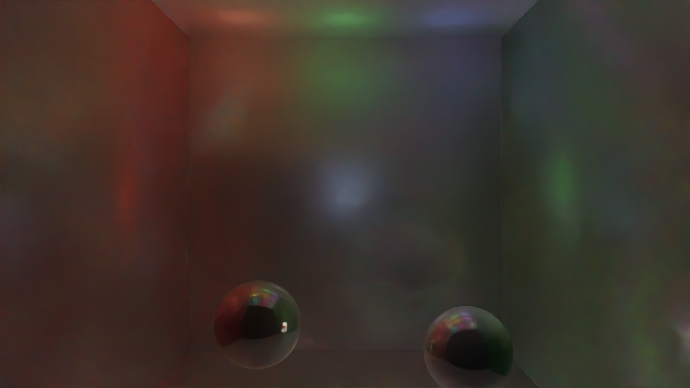
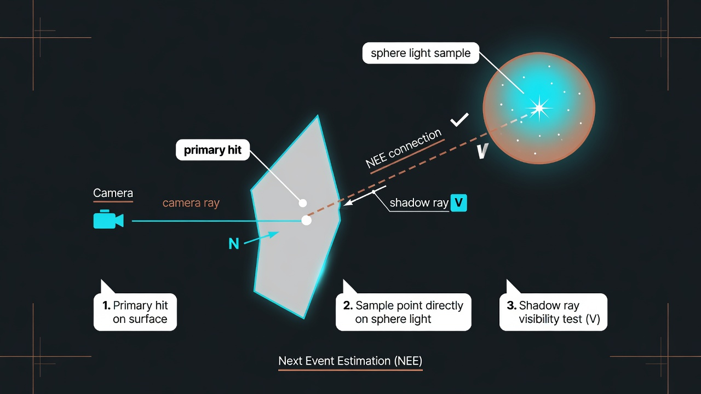
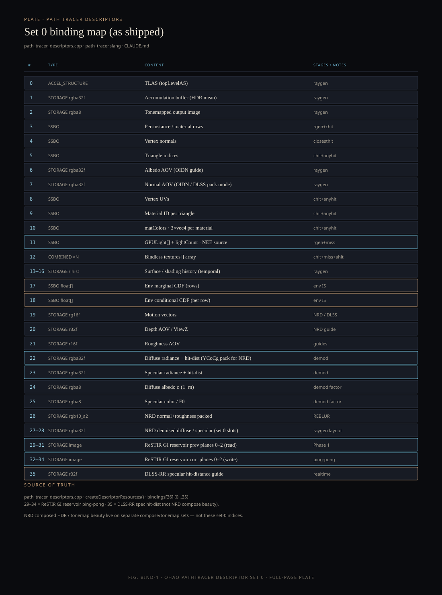

Monograph · 06 · Path tracer
Pipelines · implementation
Path tracer
Document the path tracer as coded in path_tracer.slang, the path tracer both RT profiles run, an estimator of OpenPBR’s base BSDF. The deep section below is a line-anchored walk of its NEE sphere-light branch — every jargon term, formula, and step answers why.
Host lifecycle (before a single ray)
The path tracer is not constructed in VulkanRenderer::initialize. It appears on demand so 4K dual profiles do not OOM.
- Device + TLAS host already exist (Ch. 03)
- Scene uploaded: VB/IB, matColors, lights, bindless,
buildBLASTLAS setRenderMode(RTOffline|RTRealtime)→ensureRTRenderer(mode)- Construct PathTracer;
initdevice/instance/queue; allocate beauty + AOV images for width×height - Create RT pipeline from the profile’s SPIR-V and entry points (raygen/miss/chit/ahit); build SBT
- Create descriptor set (bindings 0–41); bind TLAS, buffers, images, CDFs, OpenPBR tables, the radiance cache
- Apply profile settings (bounces, accumulation, AOVs, denoise mode, firefly clamp)
- Per frame / spp: with the radiance cache on, begin it, run the
cacheUpdatetrace and resolve it; then push constants (invView/invProj, sample index, flags) →traceRays - Optional denoise (Ch. 09); copy to staging / present
- Camera move →
resetAccumulation/ notify view changed
Each PathTracer holds full-resolution HDR + many AOVs. Offline + realtime at once at 4K exhausted 8 GiB (Fox.glb hang). Lazy create + 1080p default fixed it.
Integrator math (NEE walk below) only runs after this host path succeeds.
Visual plates

Real engine output
Cornell box beauty. Exported from ./build/cornell_box @ 16 spp + OIDN — not AI art.

Conceptual illustration — not engine output NEE idea sketch. Grok Imagine diagram for intuition only; shading below is from the real Slang.
Role
PathTracer is the physical image-formation path for
RTOffline / RTRealtime. It estimates the rendering
equation by shooting rays, connecting to lights, and accumulating samples.
The balance of light leaving a surface point: emission plus the integral of incoming light weighted by the BRDF and the cosine to the normal. Path tracing estimates that integral with random samples instead of solving it analytically.
It is the definition of “correct” lighting for opaque surfaces. The offline profile accumulates up to 32 bounces a sample into a running mean; the realtime profile traces fewer and hands each frame to a temporal denoiser (NRD by default).
Integrator stages
Camera ray and what it sees
A jittered ray (kRayMaskCamera) adds emission, a light's emitter mesh or the environment, and writes the primary hit's guides (depth, motion, roughness, albedo, normal).
Next-event estimation at every vertex
One light chosen uniformly and one environment direction from its CDF, each behind a shadow ray and weighed against BSDF sampling by the power heuristic (this chapter’s deep walk).
BSDF sampling and the bounce
OpenPBRBase::sample picks the next direction; a bounce ray that meets an emitter or leaves the scene is weighed against the light or environment sampling that could have found it. Russian roulette from the third vertex. In the realtime profile a path past its first vertex ends in the radiance cache when the hit is far enough for its voxel (see the radiance cache unit).
Denoisers (NRD/DLSS) need separate diffuse and specular statistics. The reference keeps one path and routes everything after the primary hit to diffuseOut or specularOut by the lobe the first BSDF sample came from (firstLobe), so the beauty stays one unbiased estimate.
Deep walk · NEE sphere branch
Source: shaders/rt/path_tracer.slang, sampleLight lines 233–295
and its use in raygen at 617–634. We walk the sphere light
branch (point and spot lights, l.type 0 and 2), the general solid-angle case.
Instead of hoping a random bounce hits a light, we explicitly sample a direction toward a light and cast a shadow ray to test visibility. That direct connection is the “next event.” Without NEE, small bright lights are almost never hit by BSDF sampling alone → noisy or black direct lighting.
How likely a continuous random choice was. Monte Carlo divides the contribution by the PDF so rare samples are not under-counted and common samples are not over-counted. Every density here is in solid angle, so light sampling and BSDF sampling can be compared.
The running product of “how much light survives” along a path (BSDF × cosine / PDF per bounce, divided by the Russian roulette survival chance). At the primary hit it is 1.
A light with an emitter mesh can be found two ways: by sampling the light, or by a BSDF bounce that meets its mesh. Each estimate is weighted by the power heuristic \(p_a^2/(p_a^2+p_b^2)\) of the two densities, so the two weights sum to one and the light is counted once at any roughness (Ch. 07).
Step 1 · Pick a light uniformly
If any lights exist (lightCount(), the light buffer's header), one index is drawn from the first coordinate of the bounce's light group, a point of the path's Owen-scrambled Sobol sequence (244) and its choice probability kept as choose (245). The light is decoded from five rows of the buffer (loadLight, 173–192), and s.mis records whether it has an emitter mesh a bounce ray could meet (247).
242const uint n = lightCount(); 243if (n == 0u) return s; 244const uint i = min(uint(rng.next() * float(n)), n - 1u); 245const float choose = 1.0 / float(n); 246const Light l = loadLight(i); 247s.mis = l.emitter; 248const float u1 = rng.next(), u2 = rng.next();
Simple and unbiased: the choice probability is folded into every density (choose), and for a sun into its radiance. Power-proportional picking would lower variance; uniform is correct and easy to validate.
Step 2 · The sphere's radiance
A point or spot light of intensity \(I\) is a sphere of its radius \(r\) (at least 1 cm) whose radiance is \(I/(\pi r^{2})\), so it delivers \(I/d^{2}\) at distance \(d\) as the deferred frame's point light does. The range window \((1-(d/\text{range})^4)^2\) and a spot's cone toward the shaded point multiply it.
198const float r = l.radius; 199float3 le = l.radiance / (kPi * r * r); 200const float d = distance(p, l.position); 201const float x = d / l.range; 202const float w = saturate(1.0 - x * x * x * x); 203le *= w * w;
A sphere of radiance \(L_e\) seen from far away subtends \(\pi r^2/d^2\) steradians, so its irradiance is \(L_e\,\pi r^2/d^2 = I/d^2\): the same light the raster frame computes analytically (Frank's ruling, 2026-10-26).
Step 3 · Sphere branch: sample its cone of directions
From the shading point the sphere fills a cone of half-angle \(\theta_{\max}\), \(\sin^2\theta_{\max}=r^2/d^2\). A direction is drawn uniformly inside that cone, so every sample sees the sphere and none is wasted on its back. \(1-\cos\theta_{\max}\) is computed without cancellation (279). The shadow ray stops at the sphere's near side along the sampled direction (290).
274const float3 toC = l.position - p; 275const float d2 = dot(toC, toC); 276const float r = l.radius; 277const float sin2 = r * r / d2; 278if (sin2 >= 1.0) return s; 279const float oneMinusCosMax = sin2 / (1.0 + sqrt(1.0 - sin2)); 280const float oneMinusCos = u1 * oneMinusCosMax; 281const float cosT = 1.0 - oneMinusCos; 283const float phi = kTwoPi * u2; 288s.L = normalize(t * (sinT * cos(phi)) + b * (sinT * sin(phi)) + w * cosT); 290s.dist = max(dc - sqrt(max(r * r - d2 + dc * dc, 0.0)), 0.0) - 1e-3; 291s.pdf = choose / (kTwoPi * oneMinusCosMax); 292s.radiance = sphereRadiance(l, p);
How big a surface looks from the shading point. Sampling the cone directly gives a density in solid angle with no area-to-solid-angle conversion, and the same density (spherePdf, 214–221) is what a bounce ray that meets the sphere's emitter mesh is weighed against.
Uniform area samples on a whole sphere put half of them on its far side, where they contribute nothing. The cone puts every sample on the visible cap, and a shading point inside the sphere (sin2 >= 1) gets no sample rather than a wrong one.
Step 4 · Shadow ray (visibility)
Only if the BSDF is nonzero and the direction leaves on the geometric side the ray came from. The ray starts 1 mm off the surface along the geometric normal (615), traces kRayMaskScene (so no emitter mesh occludes its own light), accepts the first hit and skips the closest-hit shader. The payload starts as a hit; only the miss shader clears it.
390if (dist <= 0.0) return false; 394ray.TMin = 1e-4; 395ray.TMax = dist; 397p.flags = kHit; 398TraceRay(scene, traceFlags() | RAY_FLAG_ACCEPT_FIRST_HIT_AND_END_SEARCH | RAY_FLAG_SKIP_CLOSEST_HIT_SHADER, 399 kRayMaskScene, 0, 0, 0, ray, p); 400return (p.flags & kHit) == 0u;
Accept first hit stops at the first occluder — only yes/no visibility is needed. Skip closest hit skips material resolution on the occluder. traceFlags() forces opacity unless an instance has an alpha material, in which case the any-hit shader decides.
Step 5 · BSDF × radiance × MIS weight / pdf
On a visible sample, OpenPBRBase::eval (BSDF × cosine) times the light's radiance, weighted by the power heuristic against the BSDF's own density for that direction and divided by the light's density. A sun is a delta (its radiance already divided by its choice); a light without an emitter mesh can only be found this way and takes full weight.
619const LightSample ls = sampleLight(hit.position, rng); 623const float3 f = base.eval(wo, wi, tables); 624if (any(f > 0.0) && dot(ls.L, hit.geoNormal) > 0.0 && visible(p, ls.L, ls.dist)) 628 const float w = ls.pdf > 0.0 ? (ls.mis ? powerHeuristic(ls.pdf, base.pdf(wo, wi, tables)) : 1.0) / ls.pdf : 1.0; 629 const float3 c = throughput * f * ls.radiance * w; 630 radiance += c;
When the BSDF-sampled bounce ray meets the same light's emitter mesh (496–511), emitterRadiance recomputes the light-sampling density for that direction and the hit is weighed by \(p_f^2/(p_f^2+p_L^2)\). The two weights sum to one, so a near-mirror and a rough surface both count the light once.
Directional (type 1): the direction against its travel, a 10 km shadow ray, no density (a delta). Area (type 3): a point uniform on the rectangle edge1 × edge2, one-sided, radiance \(I/(4\pi r^2)\), density \(d^2/(\cos\theta_L A)\) over the choice. Then the environment: one direction from its CDF, weighed the same way.
Full-page binding plate

Descriptor set 0. The layout in path_tracer_descriptors.cpp: the plate draws bindings 0–35, of which 13–16 and 27–35 are no longer in the layout; instances 36, material refs 37, OpenPBR energy tables 38 and the radiance cache's keys, sums and resolved values 39–41 are not drawn.
Source map
shaders/rt/path_tracer.slangBoth profiles · NEE L233–295 · raygen L446–697 · cacheUpdate L730–831shaders/material/openpbr.slangOpenPBR base BSDF: eval, pdf, sampleshaders/rt/radiance_cache*.slang · radiance_cache.*Radiance cache: cells, sums, resolvepath_tracer_descriptors.cppBinding layoutgpu_light.hpp80-byte light structrt_settings.hpp / rt_meta.hppProfiles · traitsDesign units in this module
Each card is a focused design page (what / how / why + sources). Full tree: Sitemap.
Host lifecycle
ensureRTRenderer, images, pipeline, SBT, descriptors.
Profiles & meta
RTRenderSettings, Realtime vs Offline traits.
Acceleration structures
BLAS/TLAS API, rebuild vs update.
Raygen integrator
The OpenPBR path tracer: NEE + BSDF sampling under MIS, AOV writes.
Radiance cache
A world-space hash grid of reflected radiance, filled by a sparse update trace and read by realtime paths past their first vertex: SHaRC's design in OHAO's Slang.
Hit & miss shaders
closesthit materials, anyhit alpha, miss env.
Descriptor map 0–41
Set-0 layout: TLAS, images, AOVs and guides, scene tables, OpenPBR tables, the radiance cache.